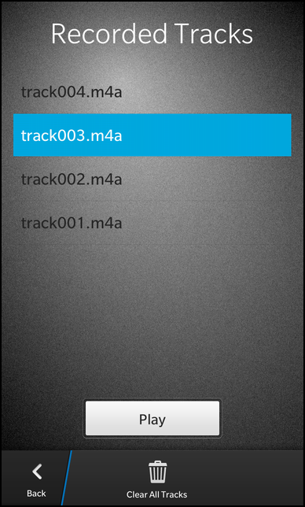

Dictaphone Example
Files:
- multimedia/dictaphone/assets/Led.qml
- multimedia/dictaphone/assets/PlayerSheet.qml
- multimedia/dictaphone/assets/Tape.qml
- multimedia/dictaphone/assets/main.qml
- multimedia/dictaphone/src/TrackManager.cpp
- multimedia/dictaphone/src/TrackManager.hpp
- multimedia/dictaphone/src/main.cpp
- multimedia/dictaphone/dictaphone.pro
- multimedia/dictaphone/translations/dictaphone.pro
Description
The Dictaphone example simulates an analog dictaphone. It allows you to record some voice, pause the recording and play it back later on. You can also record multiple tracks in a sequence.


Overview
In this example we'll learn how to use the AudioRecorder and MediaPlayer classes of the BB10 framework to record some audio data and play them back afterwards. The recorded data are stored inside a file on the file system from where the MediaPlayer can load them.
The UI
The UI of this sample application consists of two pages. The main page contains some graphical accessoires like a speaker box, an LED and a tape cover to make it look like a real dictaphone, and the three buttons to interact with the application. Clicking the 'Play' button opens a separated Sheet which lists all recorded tracks and allows the user to play back one of them.
// The led object Led { horizontalAlignment: HorizontalAlignment.Left verticalAlignment: VerticalAlignment.Top translationX: 40 translationY: 500 state: (recorder.mediaState == MediaState.Started ? "rec" : recorder.mediaState == MediaState.Paused ? "pause" : "off") }
The first accessoire is the LED object, which is implemented in the separated file Led.qml.
ImageView { property string state: "off" imageSource: (state == "rec" ? "asset:///images/led_rec.png" : state == "pause" ? "asset:///images/led_pause.png" : "asset:///images/led_off.png") }
It consists of an ImageView that shows different images depending on the value of its custom property 'state'. The value of the 'state' property is bound inside main.qml against the current media state of the AudioRecorder object.
// The tape object Tape { id: tape horizontalAlignment: HorizontalAlignment.Center verticalAlignment: VerticalAlignment.Top translationY: 570 running: (recorder.mediaState == MediaState.Started) }
The second accessoire is the tape object, which is implemented in the file Tape.qml.
Container { property bool running: false onRunningChanged: { if (running) animation.play() else animation.stop() } layout: DockLayout {} ImageView { horizontalAlignment: HorizontalAlignment.Center verticalAlignment: VerticalAlignment.Center imageSource: "asset:///images/tape_shadow.png" } ImageView { id: leftGear horizontalAlignment: HorizontalAlignment.Center verticalAlignment: VerticalAlignment.Center translationX: -155 translationY: -8 imageSource: "asset:///images/tape_gear.png" } ImageView { id: rightGear horizontalAlignment: HorizontalAlignment.Center verticalAlignment: VerticalAlignment.Center translationX: 138 translationY: -8 imageSource: "asset:///images/tape_gear.png" } ImageView { horizontalAlignment: HorizontalAlignment.Center verticalAlignment: VerticalAlignment.Center imageSource: "asset:///images/tape_cover.png" } animations: ParallelAnimation { id: animation SequentialAnimation { target: leftGear RotateTransition { fromAngleZ: 0 toAngleZ: 1800 duration: 15000 easingCurve: StockCurve.Linear } } SequentialAnimation { target: rightGear RotateTransition { fromAngleZ: 0 toAngleZ: 1800 duration: 15000 easingCurve: StockCurve.Linear } } }
It consists of a Container that contains a couple of ImageView objects inside a DockLayout, basically the background of the tape, the two tape gears and the tape cover. Since we want to animate the tape gears during a recording, we define two RotateTransitions on them inside a ParallelAnimation. This animation will be started or stopped depending on the value of the custom property 'running'. The value of the 'running' property is again bound inside main.qml against the current media state of the AudioRecorder object.
// The 'Record' button ImageToggleButton { rightMargin: 2 imageSourceDefault: "asset:///images/rec_button.png" imageSourcePressedUnchecked: "asset:///images/rec_button.png" imageSourceChecked: "asset:///images/rec_button_pressed.png" imageSourcePressedChecked: "asset:///images/rec_button_pressed.png" imageSourceDisabledChecked: "asset:///images/rec_button_pressed.png" enabled: (recorder.mediaState != MediaState.Paused) onCheckedChanged: { if (recorder.mediaState == MediaState.Started) { // Stop the recorder recorder.reset() // Update the internal track list _trackManager.update() // Play the finished sound recordStopSound.play() } else { // Update the internal track list _trackManager.update() // Configure the recorder to use a new URL recorder.outputUrl = _trackManager.nextTrackUrl() // Play the start sound recordStartSound.play() // Start the recorder recorder.record() } } }
The 'Record' button is implemented as an ImageToggleButton with two different images for its normal and pressed state. Whenever the user toggles its checked state, we test for the current media state of the AudioRecorder and stop or start the recorder. If we start a new recording, we first initialize the 'outputUrl' of the recorder with a new file name that we get from the exported TrackManager object. Additionally we play an appropriated SystemSound.
// The 'Pause' button ImageToggleButton { leftMargin: 2 rightMargin: 2 imageSourceDefault: "asset:///images/pause_button.png" imageSourceDisabledUnchecked: "asset:///images/pause_button.png" imageSourcePressedUnchecked: "asset:///images/pause_button.png" imageSourceChecked: "asset:///images/pause_button_pressed.png" imageSourcePressedChecked: "asset:///images/pause_button_pressed.png" enabled: (recorder.mediaState == MediaState.Started || recorder.mediaState == MediaState.Paused) onCheckedChanged: { if (recorder.mediaState == MediaState.Started) recorder.pause() else recorder.record() } }
The 'Pause' button is also implemented as an ImageToggleButton with two different images for its normal and pressed state. Whenever the user toggles its checked state, we test for the current media state of the AudioRecorder and pause or continue the recording.
// The 'Play' button ImageButton { leftMargin: 2 defaultImageSource: "asset:///images/play_button.png" pressedImageSource: "asset:///images/play_button_pressed.png" disabledImageSource: "asset:///images/play_button.png" enabled: (_trackManager.hasRecordedTracks && recorder.mediaState != MediaState.Started && recorder.mediaState != MediaState.Paused) onClicked: playerSheet.open() }
The 'Play' button is implemented as a normal ImageButton since we don't want to have the toggle behavior. If the user clicks the button, we open the player sheet, which is implemented in PlayerSheet.qml.
attachedObjects: [ AudioRecorder { id: recorder }, PlayerSheet { id: playerSheet }, SystemSound { id: recordStartSound sound: SystemSound.RecordingStartEvent }, SystemSound { id: recordStopSound sound: SystemSound.RecordingStopEvent } ]
The AudioRecorder, PlayerSheet and the two SystemSound objects are created as attached objects to the Page object.
Sheet { id: playerSheet Page { Container { layout: DockLayout {} // The background image ImageView { horizontalAlignment: HorizontalAlignment.Fill verticalAlignment: VerticalAlignment.Fill imageSource: "asset:///images/sheet_background.png" } Container { horizontalAlignment: HorizontalAlignment.Fill verticalAlignment: VerticalAlignment.Fill leftPadding: 30 topPadding: 30 rightPadding: 30 bottomPadding: 30 // The title label Label { horizontalAlignment: HorizontalAlignment.Center text: qsTr ("Recorded Tracks") textStyle { base: SystemDefaults.TextStyles.BigText color: Color.White } } // The recorded tracks list view ListView { id: listView horizontalAlignment: HorizontalAlignment.Center topMargin: 50 dataModel: _trackManager.model listItemComponents: ListItemComponent { type: "item" StandardListItem { title: ListItemData.name } } onTriggered: { clearSelection() select(indexPath) } } // The 'Play' button Button { horizontalAlignment: HorizontalAlignment.Center topMargin: 50 text: qsTr ("Play") onClicked: { // Reset URL of player player.sourceUrl = "" // Set the currently selected track as player source URL player.sourceUrl = listView.dataModel.data(listView.selected()).url // Start playback player.play() } } } } actions: [ ActionItem { title: qsTr ("Back") ActionBar.placement: ActionBarPlacement.OnBar onTriggered: { playerSheet.close() } }, ActionItem { title: qsTr ("Clear All Tracks") ActionBar.placement: ActionBarPlacement.OnBar onTriggered: { _trackManager.clearAllTracks() playerSheet.close() } } ] attachedObjects: [ MediaPlayer { id: player } ] } }
The PlayerSheet contains a ListView that uses the TrackManager's model as data model and a Button to start the playback of the currently selected track. The actual playback is done by the MediaPlayer object, which is created as attached object of the page. There are also two actions to close the sheet and go back to the main screen or to delete all recorded tracks from the file system.
TrackManager
The TrackManager provides information about the recorded tracks to the UI. To make it accessible in the QML file we export it as context property inside the main function.
// Load the UI description from main.qml QmlDocument *qml = QmlDocument::create("asset:///main.qml").parent(&app); // Make the TrackManager object available to the UI as context property qml->setContextProperty("_trackManager", new TrackManager(&app));
The first of the two properties of TrackManager is 'model', that provides a GroupDataModel filled with all the available tracks from the file system. The second property is 'hasRecordedTracks', which reports whether there are tracks available in the file system at all.
class TrackManager : public QObject { Q_OBJECT // A model that contains a list of all recorded tracks Q_PROPERTY(bb::cascades::GroupDataModel* model READ model CONSTANT) // A flag that defines whether recorded tracks are available or not Q_PROPERTY(bool hasRecordedTracks READ hasRecordedTracks NOTIFY hasRecordedTracksChanged) public: TrackManager(QObject *parent = 0); // This method is invoked to get the target URL for the next track to record. Q_INVOKABLE QUrl nextTrackUrl() const; public Q_SLOTS: // This method is invoked to clear all recorded tracks void clearAllTracks(); // This method is invoked to update the internal state of the track manager. void update(); Q_SIGNALS: // The change notification signal of the property void hasRecordedTracksChanged(); private: // A helper method to update internal data from the track storage location void updateTrackInformation(); // The accessor methods of the properties bb::cascades::GroupDataModel* model() const; bool hasRecordedTracks() const; // The model that contains the list of recorded tracks bb::cascades::GroupDataModel *m_model; // The internal track counter unsigned int m_trackCounter; };
When the user starts a new recording, the nextTrackUrl() method is invoked on the TrackManager. This method increments its internal track counter and assembles and returns a new file URL.
QUrl TrackManager::nextTrackUrl() const { // The next track will have the current track number incremented by one const int nextTrack = m_trackCounter + 1; // Return an URL in the form "app/native/tracks/track001.m4a" return QUrl(QString::fromLatin1("%1/track%2.m4a").arg(QDir(trackStorageLocation()).absolutePath()) .arg(nextTrack, 3, 10, QLatin1Char('0'))); }
If the user triggers the 'Clear All Tracks' action in the player sheet, the clearAllTracks() method is invoked on the TrackManager. This method iterates over all files in the track storage directory and removes them.
void TrackManager::clearAllTracks() { // Iterate over all files in the track directory and delete them QDirIterator it(trackStorageLocation(), QDir::Files | QDir::NoDotAndDotDot); while (it.hasNext()) { it.next(); QFile::remove(it.fileInfo().absoluteFilePath()); } updateTrackInformation(); }
Whenever the number of recorded tracks has changed, the updateTrackInformation() method is invoked. Inside this method the model is cleared and the internal track counter is reset. Afterwards we iterate over the track storage directory and for each found file, we add an entry to the model and increase the track counter.
void TrackManager::updateTrackInformation() { const bool oldHasRecordedTracks = hasRecordedTracks(); // Clear the content of the tracks model m_model->clear(); // Reset the internal track counter m_trackCounter = 0; // Iterate over the track storage directory and fill the model QDirIterator it(trackStorageLocation(), QDir::Files | QDir::NoDotAndDotDot); while (it.hasNext()) { it.next(); QVariantMap entry; entry["name"] = it.fileName(); // used as title in the ListView entry["url"] = it.fileInfo().absoluteFilePath(); // used by the MediaPlayer m_model->insert(entry); m_trackCounter++; } // Emit change notification signal if the hasRecordedTracks property has changed if (oldHasRecordedTracks != hasRecordedTracks()) emit hasRecordedTracksChanged(); }